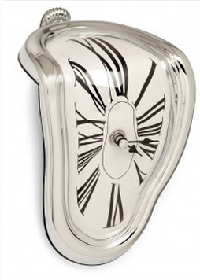

Time Management Research
The goal of this project is to study how people sense their time and how technology can help improve the productivity of their days. In this study, we will be collecting four sets of user data: plan sheet, review sheet, laptop log, experience survey. With those data, we wish to discover the secret of human time rythmn and its dependency on technology.